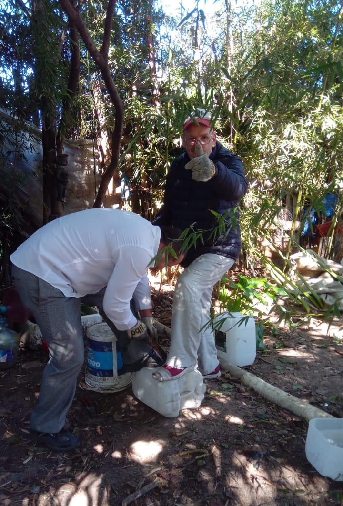
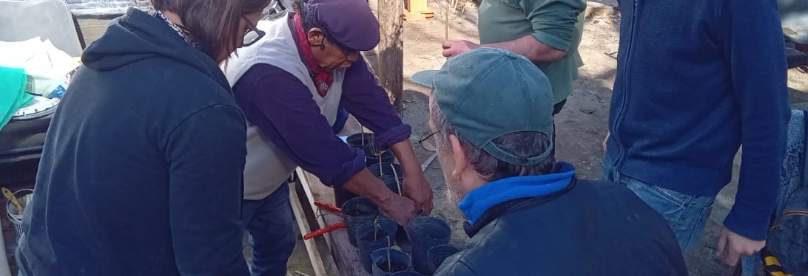
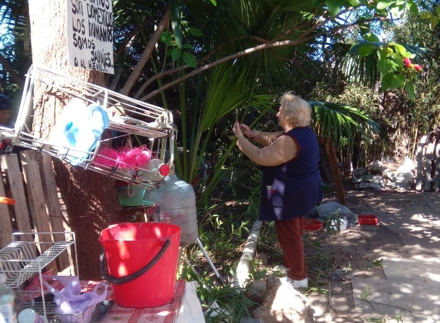
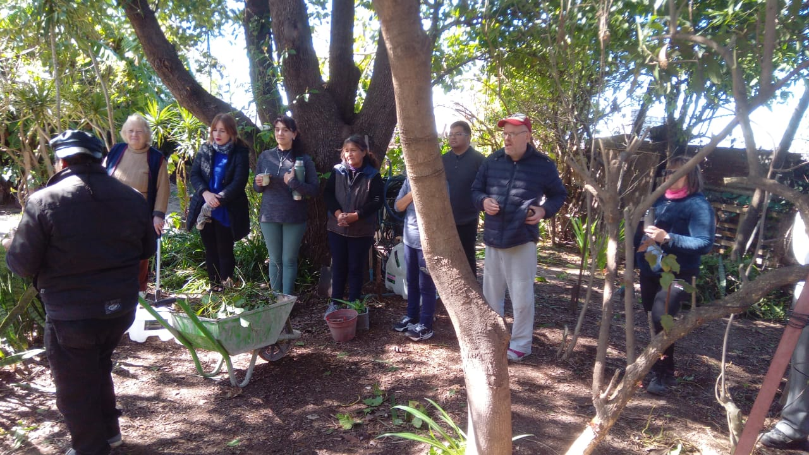

Comunidad de la Huerta

Voluntarios de la huerta realizando tareas de mantenimiento (en este caso, podando).
El mantenimiento se realiza los martes y jueves de 15hs a 19 hs.

Clase del curso de huerta orgánica dado por Coco, uno de los profes principales del espacio.
Los cursos suelen darse los sábados, de 10 a 14 hs.

Neli es encargada del espacio. Organiza las actividades y ayuda en el mantenimiento.

Grupo de alumnos del curso de huerta, escuchando antes de iniciar con la práctica.
La Huerta Comunitaria de Garay es un espacio construido y cuidado entre vecinos. Se puede participar de manera gratuita para realizar tareas de huerta, para asistir a sus cursos o simplemente para visitarla (dentro de sus horarios de apertura).
Además, compartimos cursos de huerta, talleres y distintas propuestas relacionadas con el cultivo y el cuidado de la tierra. También recibimos visitas de colegios y celebramos encuentros culturales, como celebraciones de fechas patrias, ceremonias de pueblos originarios y peñas.